전자계산기제어산업기사 (2015-03-08 기출문제)
1과목: 전자회로
1. pn 접합 다이오드에서 정광과 전자가 서로 반대쪽으로 흘러 나가는 것을 방해하는 것은 접합부에 무엇이 있기 때문인가?
- 전위장벽
- 전자궤도
- 에너지 준위
- 페르미 준위
(정답률: 알수없음)

2. 다음 증폭기 회로의 교류 부하선의 기울기는?
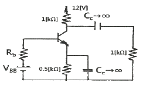
- -1/2000
- -1/5000
- -1/1000
- -1/500
(정답률: 알수없음)
3. 다음 발진기들 중 귀환 회로를 사용하지 않는 발진기는?
- LC 동조회로를 사용한 터널다이오드 발진기
- 컬렉터 동조 발진기
- CR 이상 발진기
- X-tal 발진기
(정답률: 알수없음)
4. 다음 중 발진기에서 발진주파수가 변동되는 것을 방지하기 위한 대책으로 적합하지 않은 것은?
- 온도를 일정하게 유지한다.
- 부하의 변동을 크게 한다.
- 정전압 회로를 넣는다.
- 습기가 차지 않게 한다.
(정답률: 82%)
5. 다음 중 그림과 같은 증폭기의 귀환율 β의 값은?
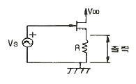
- 0
- 0.5
- 1
- ∞
(정답률: 알수없음)
6. 소신호 트랜지스터 증폭 회로에서 입력 저항은 매우 작고, 출력 저항이 매우 큰 것은?
- 푸시 풀(Push-pull)방식
- 베이스 접지방식
- 컬렉터 접지방식
- 이미터 접지방식
(정답률: 알수없음)
7. 그림과 같은 정류회로에서 다이오드 D1에 걸리는 최대 역전압(PIV)은? (단, 다이오드의 순 방향 저항은 무시하고, C1, C2 및 RL은 충분히 크다고 생각한다. 그리고 전원 변성기 2차측에는 Vmsinωt [V]를 인가한 것으로 한다.)
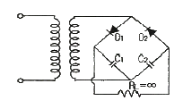
- Vm
- 2Vm
- √2 Vm
- 2√2 Vm
(정답률: 55%)
8. 그림과 같은 연산회로의 전달특성은?
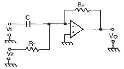
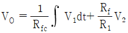
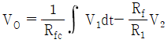
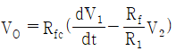
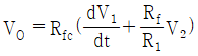
(정답률: 알수없음)
9. 트랜지스터가 스위치로 사용할 때 쓰이는 두 개의 영역은?
- 포화영역과 활성영역
- 활성영역과 차단영역
- 포화영역과 차단영역
- 활성영역과 역할성영역
(정답률: 알수없음)
10. 다음 연산증폭기 회로에서 Vi – Vo 의 관계 특성으로 가장 적합한 것은? (단, 연산증픽고 및 다이오드는 이상적이다.)
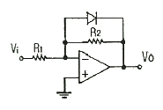
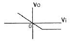
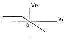
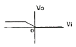
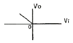
(정답률: 알수없음)
11. 반송파 전력이 10[kW]일 때 변조파형이 그림과 같을 경우에 피변조파의 전력 Pm은 얼마인가?
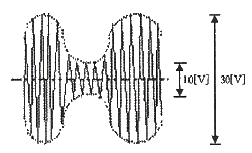
- 1.125[kW]
- 3.375[kW]
- 11.25[kW]
- 33.75[kW]
(정답률: 37%)
12. 연산증폭기의 입력전류가 각각 9.7[μA]와 7.5[μA] 일 때 바이어스 전류(Ibias)는 얼마인가?
- 7.6[μA]
- 8.1[μA]
- 8.6[μA]
- 9.1[μA]
(정답률: 알수없음)
13. 다음 중 공통 에미터 접속에 대한 h상수 표현식으로 틀린 것은?
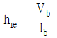
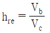
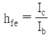
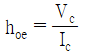
(정답률: 39%)
14. 연산증폭기 특성으로 틀린 것은?
- 반전, 비반전 2개의 입력단자를 가지며, 각각의 입력단자에 가해진 입력 전압의 차 전압이 증폭되는 차동증폭기를 입력단으로 사용한다.
- 귀환에 대한 안정도를 높이기 위해 광범위한 주파수에서 주파수 보상 회로를 필요로 한다.
- 연산의 정확도를 높이기 위해서는 큰 증폭도와 좋은 안정도를 필요로 한다.
- 대역폭이 무한대이고, 지연응답이 0 이다.
(정답률: 알수없음)
15. 다음 중 발진회로의 특징이 아닌 것은?
- 콜피츠 발진의 귀환신호는 LC회로의 커패시터 전압에서 유도된다.
- 정현파 RC 발진기에는 윈 브리지형, 이상형 등이 있다.
- 귀환 루프의 전압 이득이 1 이어야 한다.
- 정귀환 조건 중 귀환 루프의 위상차는 90° 이다.
(정답률: 알수없음)
16. 변압기를 사용하지 않는 전력 증폭회로에서 push-pull 회로의 조건으로 거리가 먼 것은?
- 두 입력의 크기는 같을 것
- 위상차는 180° 일 것
- B급에서 동작할 것
- 전원 효율이 50% 이하일 것
(정답률: 알수없음)
17. PLL을 구성하는 회로 블록이 아닌 것은?
- 위상 검출기
- 저역 통과 필터
- 주파수 체배기
- 전압 제어 발진기
(정답률: 알수없음)
18. 다음 회로에서 A는 연산증폭기일 때 V1 = 2[V], V2 = 3[V] 일 때 Vo는?
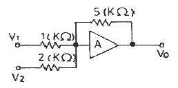
- -17.5[V]
- -1.6[V]
- -11.25[V]
- -7.2[V]
(정답률: 알수없음)
19. 그림과 같이 동일 진폭의 두 정현파 10kHz, 1kHz 가 다이오드에 인가될 때 출력 측에 나타나는 전압 성분 중 가장 많은 것은?
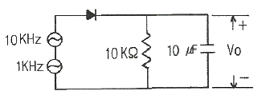
- DC 성분
- 1 kHz 성분
- 10 kHz 성분
- 11 kHz 성분
(정답률: 40%)
20. 그림과 같은 회로에서 출력 전압은? (단, R1=R2 이고, R3=R4 이다.)
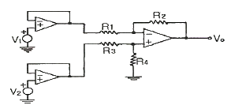
- V1 - V2
- V2 - V1
- V1 - 2V2
- 2V2 - V1
(정답률: 알수없음)
2과목: 디지털공학
21. 다음 Qt+1 열에 들어갈 ①~⑥의 순서로 맞는 것은?
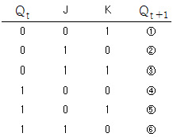
- 0-1-1-0-0-1
- 0-1-1-1-0-1
- 0-1-1-0-1-1
- 1-0-0-0-1-1
(정답률: 알수없음)
22. 전송하고자 하는 3개 비트 (A, B, C) 외에 1개의 부가적인 패리티 비트(P)를 추가하여 홀수 패리티 발생기를 설계하고자 한다. 홀수 패리티 비트(Parity blt) 발생기의 논리식은?
- A⊕B⊕C
- A⊙B⊙C
- A⊕B⊙C
- A⊙B⊕C
(정답률: 47%)
23. 10진수 234를 언팩(Unpack)형식의 표현으로 나타낸 것은?
- F2F3C4
- F2F3D4
- F2F3F4
- F234C
(정답률: 알수없음)
24. 101101에 대한 2의 보수는?
- 101110
- 010010
- 010001
- 010011
(정답률: 알수없음)
25.
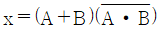
와 같은 것은?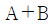
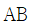
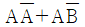
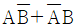
(정답률: 알수없음)
26. 전가산기(FA)의 회로 구성은?
- 2개의 반가산기와 1개의 OR Gate로 구성
- 2개의 반가산기와 1개의 NOR Gate로 구성
- 2개의 반가산기와 1개의 AND Gate로 구성
- 2개의 반가산기와 1개의 NAND Gate로 구성
(정답률: 알수없음)
27. 어떤 플립플롭에서 CP(clock pulse)가 1에서 0으로 변하는 시간과 출력이 보수화 되는 시간 사이에 20ns의 지연이 생긴다면 10bits의 리플카운터는 얼마의 지연시간이 발생되는가?
- 2 ns
- 20 ns
- 200 ns
- 400 ns
(정답률: 알수없음)
28. 논리식 (A+B)(A+B′)(A′+B)(A′+B′)를 간략히 하면?
- 0
- 1
- A
- A′
(정답률: 알수없음)
29. 다음 진리표를 곱의 합 형식으로 표현한 것은?
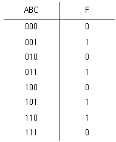
- f(A, B, C) = ∑(1, 2, 5, 6)
- f(A, B, C) = ∑(1, 3, 5, 6)
- f(A, B, C) = ∑(1, 4, 5, 6)
- f(A, B, C) = ∑(3, 5, 6, 7)
(정답률: 82%)
30. 데이터 전송 과정에서 발생한 에러 코드 위치를 검출하여 수정할 수 있는 코드는?
- Hamming Code
- Parity Code
- Excess-3 Code
- Gray Code
(정답률: 알수없음)
31. 다음 JK 플립플롭의 입력신호의 주파수가 1[MHz] 일 때 출력신호의 주파수는 얼마인가?
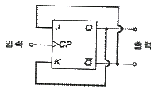
- 1 kHz
- 50 kHz
- 100 kHz
- 500 kHz
(정답률: 알수없음)
32. 카운터에 대한 설명으로 옳지 않은 것은?
- 리플 카운터는 비동기식 카운터이다.
- 플립플롭을 사용하여 7진 카운터를 설계하는 데에는 최소 3개의 플립플롭이 필요하다.
- 동일한 소자 기술로 제작할 때 동기식 카운터는 일반적으로 비동기식 카운터보다 속도가 빠르다.
- 링 카운터는 계수기의 기능과 인코더의 기능을 함께 가지고 있다.
(정답률: 알수없음)
33. n개의 입력과 최대 2n개의 출력으로 구성되는 조합 논리회로는?
- 인코더
- 디코더
- 멀티플렉서
- 플립플롭
(정답률: 알수없음)
34. 16진수 B6을 2진수로 옳게 표시한 것은?
- 10110110
- 10100110
- 10010110
- 10110010
(정답률: 알수없음)
35. 10진수 975를 16진수로 변환한 것은?
- 3CE
- 3CF
- 2CF
- 4CE
(정답률: 알수없음)
36. 6비트 D/A 변환기의 백분율 분해능은?
- 약 0.6%
- 약 1.59%
- 약 6%
- 약 15.9%
(정답률: 80%)
37. 다음 회로에서 A = 1, B = 0 일 때 출력 X, Y의 값으로 옳은 것은?
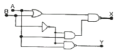
- X = 1, Y = 1
- X = 1, Y = 0
- X = 0, Y = 1
- X = 0, Y = 0
(정답률: 알수없음)
38. 다음과 같이 입력 A, B가 인가될 때 출력 F가 나타나는 게이트는?
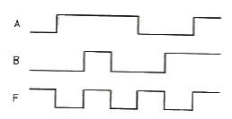
- AND
- Exclusive-OR
- Exclusive-NOR
- OR
(정답률: 알수없음)
39. 10진수 37을 BCD(8421) 코드로 변환한 것은?
- 00100101
- 00110111
- 01101010
- 01110110
(정답률: 알수없음)
40. RS 플립플롭에 대한 설명으로 옳은 것은?
- 입력신호가 모두 0 일 때는 이전상태의 반전
- 입력신호가 모두 0 일 때는 이전상태의 유지
- 입력신호가 모두 1 일 때는 이전상태의 반전
- 입력신호가 모두 1 일 때는 Reset
(정답률: 알수없음)
3과목: 마이크로프로세서
41. Stack에 데이터를 삽입하는 명령은?
- push
- write
- read
- pop
(정답률: 알수없음)
42. 프로그램이 수행되고 있는 동안에 어떤 조건이 발생하면 수행중인 프로그램을 일시적으로 중지시키게 만드는 조건이나 사건의 발생을 무엇이라 하는가?
- 인터럽트
- 타이밍 상태
- 입출력 제어
- 서비스 루틴
(정답률: 알수없음)
43. 데이터(data)의 전송 속도를 나타내는 용어 중 BPS란?
- bit per second
- byte per second
- modem과 data set
- accumulator
(정답률: 90%)
44. 매크로 명령어를 정의하는 형식 순서가 옳은 것은?
- MACRO → MACRO BODY → MACRO NAME → MEND
- MACRO → MACRO NAME과 PARAMETER → MACRO BODY → MEND
- MACRO → MACRO BODY → MEND → PARAMETER
- MEND → MACRO → PARAMETER → MACRO BODY
(정답률: 50%)
45. 단방향(simplex) 방식의 설명으로 옳은 것은?
- 라디오나 TV처럼 한 방향으로만 정보의 전송이 가능한 방식
- 어느 방향이든지 전송이 가능하나 동시에 전송할 수 없는 방식
- 동시에 어느 방향이든지 전송이 가능한 방식
- 전화기에 사용한 방식
(정답률: 알수없음)
46. 다음과 같이 구성된 8비트 타이머가 있다. 이 타이머에는 입력 펄스의 상승 에지에서 +1씩 카운팅 된다. 또한 이 타이머에 입력되는 펄스의 주파수는 4Hz 이다. 이 타이머가 20초 후에 오버플로우가 되게 하려면 타이머의 초기값은?
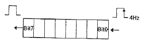
- 0×D1
- 0×D4
- 0×BO
- 0×DA
(정답률: 55%)
47. 마이크로프로세서에서 실주소와 기억공간을 상호 연결하는 개념은?
- 인터럽트(Unterrupt)
- 어드레스 매핑(Address Mapping)
- 오버래핑(Overlapping)
- 머징(Merging)
(정답률: 알수없음)
48. RS-232C 통신에 대한 설명으로 옳지 않은 것은?
- full-duplex 통신 방식이다.
- ±15V로 데이터를 송수신할 수 있다.
- 기본적으로 N(다) : N(다) 통신이다.
- 3선으로 통신을 할 수 있다.
(정답률: 알수없음)
49. 매크로 명령에 대한 설명으로 옳은 것은?
- 일련의 명령어들에 대한 축야경 명령이다.
- 기억장치의 논리적 호출 방식이다.
- 소프트웨어의 한 종류이다.
- 데이터의 한 형식으로 사용된다.
(정답률: 알수없음)
50. 베이스 어드레스 지정 방식에 대한 설명으로 옳지 않은 것은?
- 실제 데이터를 찾기 위해서는 2번의 주기억 액세스가 필요하게 된다.
- 기준번지를 넣어 둔 레지스터를 베이스 레지스터라고 부른다.
- 어드레스부의 길이를 짧게 할 수가 있다.
- 기준번지를 자유롭게 결정할 수 있다.
(정답률: 알수없음)
51. 일부분의 문자 또는 비트를 삭제하기 위해 필요한 연산은?
- XOR 연산
- OR 연산
- AND 연산
- 보수 연산
(정답률: 60%)
52. 인터럽트가 발생했을 경우 복귀 주소(return address)를 기억시키는 장소는?
- 누산기(Accumulator)
- 큐(Queue)
- 스택(Stack)
- 상태 레지스터(Status Register)
(정답률: 알수없음)
53. 일반적으로 CPU에서 DC모터의 속도제어로 사용하는 기법은?
- ADC(Analog-to-Digital Converter)
- O.C(Output Compare)
- PWM(Pulse Width Modulation)
- UART(Universal Asynchronous Receiver Transmitter)
(정답률: 알수없음)
54. 마이크로프로세서는 여러 개의 단계를 반복적으로 거치면서 동작을 수행한다. 그 단계에 속하지 않는 것은?
- fetch cycle
- execute cycle
- branch cycle
- interrupt cycle
(정답률: 80%)
55. 어떤 CPU 내부에 32개의 레지스터들이 있다면 명령어의 레지스터 번호를 가리키는 필드는 최소 몇 비트로 구성되어 있는가?
- 4bit
- 5bit
- 6bit
- 32bit
(정답률: 알수없음)
56. memory mapped I/O 방식에 대한 설명으로 틀린 것은?
- 입출력장치에 접근하기 위하여 메모리 참조 명령을 사용한다.
- 입출력장치가 차지하는 주소공간만큼 기억용량이 늘어난다.
- 어드레싱면에서 입출력장치를 기억장치의 일부로 본다.
- 메모리 참조명령을 입출력명령에도 사용할 수 있다.
(정답률: 알수없음)
57. 인터럽트 처리과정 중 인터럽트를 요청한 장치를 소프트웨어로 판별하는 방법은?
- 폴링(Polling) 방법
- 장치번호 서비스(Device code bus)를 이용하는 방법
- 스택(Stack)을 이용하는 방법
- 인터럽트 주소 결정 회로를 이용하는 방법
(정답률: 알수없음)
58. 연산장치의 기본요소가 되고 플립플롭으로 구성된 최소단위의 기억소자는?
- ALU
- ROM
- RAM
- Register
(정답률: 37%)
59. 주기억장치에서 명령을 IR(instruction register)로 가져오기 위해 필요한 시간은?
- Seek time
- Run time
- Istruction time
- Cycle time
(정답률: 알수없음)
60. 직렬 통신 시 오류검출 방버으로서 데이터 8bit에 오류정정용 코드 6bit를 추가하여 14bit를 송신하는 방식은?
- 해밍코드 방식
- PWN 방식
- PAM 방식
- EFM 방식
(정답률: 알수없음)
4과목: 프로그래밍언어
61. C 언어에서 프로그램의 변수 선언을 “int c;”로 했을 경우에 “&c”는 어떤 의미인가?
- C의 범위
- C의 저장된 값
- C의 기억 장소 주소
- C의 절대값
(정답률: 알수없음)
62. 기계어와 비교할 경우 어셈블리어에 대한 설명으로 옳지 않은 것은?
- 프로그램을 읽고 이해하기 쉽다.
- 번역 과정 없이 실행 가능하다.
- 프로그램의 주소가 기호 번지이다.
- 프로그램에 데이터를 사용하기 쉽다.
(정답률: 91%)
63. C 언어에서 한 문자 입력 함수는?
- gets ( )
- getchar ( )
- puts ( )
- putchar ( )
(정답률: 알수없음)
64. BNF 표기버에서 정의를 의미하는 것은?
- ::=
- |
- = =
- ＜＞
(정답률: 알수없음)
65. C 언어의 기억클래스 종류에 해당하지 않는 것은?
- automatic variables
- internal variables
- static variables
- register variables
(정답률: 알수없음)
66. 어셈블리어에서 라이브러리에 기억된 내용을 프로시저로 정의하여 서브루틴으로 사용하는 것과 같이 사용할 수 있도록 그 내용을 현재의 프로그램을 내에 포함시켜 주는 명령은?
- TITLE
- EVEN
- ORG
- INCLUDE
(정답률: 알수없음)
67. 매크로 프로세서의 기본 수행 기능에 해당하지 않는 것은?
- 매크로 호출 확장 및 인수 치환
- 매크로 호출 저장
- 매크로 정의 저장
- 매크로 정의 인식
(정답률: 59%)
68. 프로그래밍 언어의 번역 단계 중 어휘분석 단계에서는 원시 프로그램을 하나의 긴 스트링으로 보고 원시 프로그램을 문자 단위로 스캐닝하여 문법적으로 의미 있는 일련의 문자들로 분할 해 낸다. 이때 분할된 문법적 단위를 무엇이라 하는가?
- binding
- token
- constant
- object
(정답률: 73%)
69. 구문 분석기가 올바른 문장에 대해 그 문장의 구조를 트리로 표현한 것은?
- code tree
- content tree
- parse tree
- schema tree
(정답률: 알수없음)
70. 어셈블러를 두 개의 PASS로 구성하는 주된 이유는?
- 비용 절약을 위하여
- 유지보수 용이성을 위하여
- 메모리 사용을 줄이기 위하여
- 기호를 정의하기 전에 사용하기 위하여
(정답률: 알수없음)
71. C 언어에서 표준 출력 장치로 문자열을 출력시키는 함수는?
- getchar ( )
- putchar ( )
- puts ( )
- gets ( )
(정답률: 알수없음)
72. 어셈블리어 명령 중 CMP 명령과 같이 보다 크거나 작은 대소 관계를 비교하지 않고, 논리적인 비교와 결과가 양수 또는 음수인지를 검사하여 상태 레지스터의 상태 비트를 설정하는 것은?
- TEST
- MOV
- RET
- JMP
(정답률: 알수없음)
73. 프로그래밍 언어의 실행 순서로 옳은 것은?
- 컴파일러 → 링커 → 로더
- 링커 → 컴파일러 → 로더
- 컴파일러 → 로더 → 링커
- 링커 → 로더 → 컴파일러
(정답률: 알수없음)
74. 어셈블리어에서 어떤 기호적 이름에 상수 값을 할당하는 명령은?
- EVEN
- ORG
- ASSUME
- EQU
(정답률: 알수없음)
75. 어셈블리어에서 두 개의 오퍼랜드를 서료 교환하는 명령은?
- LEA
- LES
- XCHG
- XLAT
(정답률: 알수없음)
76. 원시 프로그램을 기계어 프로그램으로 번역하는 대신에 기존의 고수준 컴파일러 언어로 전환하는 역할을 수행하는 것은?
- 크로스 컴파일러
- 링커
- 로더
- 프리프로세서
(정답률: 알수없음)
77. C 언어에서 사용하는 자료형의 종류가 아닌 것은?
- double
- long
- integer
- dhar
(정답률: 알수없음)
78. C 언어의 이스퀘이프 시퀀스에서 “＼f”의 의미는?
- tab
- backspace
- form feed
- new line
(정답률: 80%)
79. 기계어에 대한 설명으로 옳지 않은 것은?
- 유지보수가 용이하다.
- 실행 속도가 빠르다.
- 2진수를 사용하여 데이터를 표현한다.
- 호환성이 없다.
(정답률: 알수없음)
80. 구문(Syntax)에 대한 설명으로 옳은 것은?
- 프로그래밍 개발의 방법론
- 프로그래밍 언어의 결과
- 프로그래밍 언어의 종류
- 프로그래밍 언어의 문법
(정답률: 알수없음)